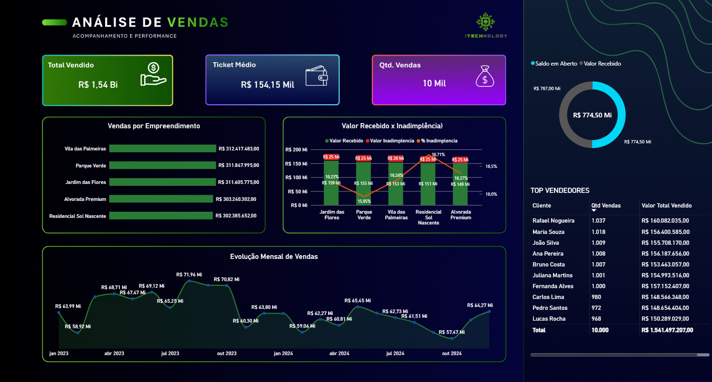

Objetivo da análise
Dar visibilidade ao comportamento das vendas e apoiar a identificação de tendências e diferenças de desempenho.
Dashboard comercial para acompanhar faturamento, volume de vendas e ticket médio, conectando a visão consolidada aos indicadores de desempenho da operação.
Objetivo, organização das informações e principais leituras disponíveis no painel.
Dar visibilidade ao comportamento das vendas e apoiar a identificação de tendências e diferenças de desempenho.
Indicadores comerciais organizados para visualização em Power BI. O material disponível não comprova a fonte original nem o processo específico de extração.
Construção de um painel com KPIs e gráficos de acompanhamento comercial, permitindo comparar resultados e observar sua evolução.
O cruzamento de faturamento, quantidade e ticket médio permite distinguir crescimento por maior volume de operações de crescimento por valor médio de venda.
